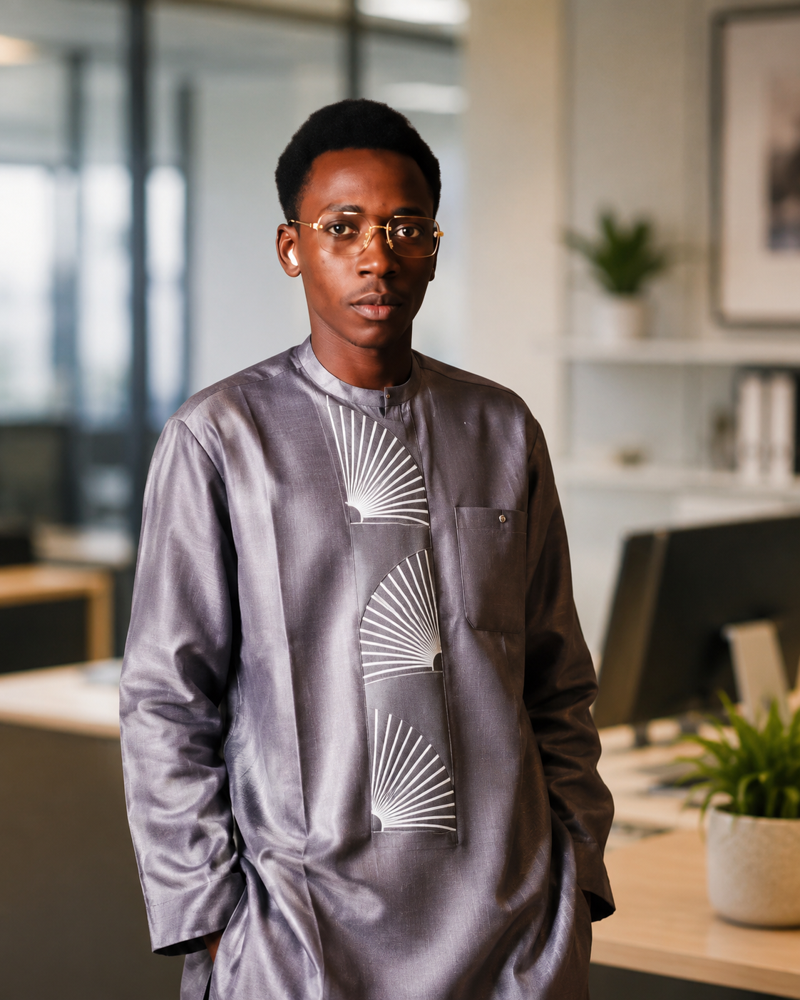

Modéliser
Comprendre et simuler les systèmes.
● ROBOTICS · AI · EMBEDDED SYSTEMS
Je conçois, simule et intègre des systèmes robotiques intelligents, de la modélisation numérique aux prototypes physiques.

01 / PROFILE
Étudiant en Licence Robotique à l’Université Numérique Cheikh Hamidou Kane, je développe des solutions qui relient mécanique, électronique, programmation et intelligence artificielle.
Mes réalisations couvrent la simulation d’un drone soumis au vent, les plateformes Mecanum, Raspberry Pi, ROS 2, la vision par ordinateur et l’IoT appliqué aux villes et à l’agriculture.
Comprendre et simuler les systèmes.
Intégrer cartes, moteurs, capteurs et mécanismes.
Ajouter perception, données et décision.
02 / SELECTED WORK
Modélisation et simulation avec analyse des perturbations du vent et de la réponse du système.
MATLAB Simulink ControlPlateforme omnidirectionnelle à quatre moteurs DC, Arduino / ESP32, L298N et réglage PWM.
Arduino ESP32 L298NRobot de jeu avec Raspberry Pi 3 B+, plateforme Mecanum, servo moteur et mécanisme de frappe.
Raspberry Pi Servo MécaniquePréparation d’un environnement ROS 2 pour développer et simuler des systèmes robotiques.
ROS 2 Ubuntu Python / C++Détection YOLO des plantes saines et carencées, OpenCV et données GPS pour cartographie.
YOLO OpenCV GPS / CSVGestion intelligente des déchets avec capteurs de niveau, alertes et dashboard web.
ESP32 Firebase DashboardConcept de ville intelligente orienté surveillance environnementale et cadre de vie.
IoT Sensors Smart CitySolution d’irrigation goutte-à-goutte intelligente pour optimiser l’usage de l’eau.
Arduino Sensors AutomationBras robotisé orienté détection et déplacement d’objets dans une boucle automatisée.
Robotics Vision Actuators03 / ENGINEERING STACK
Robotique mobile, moteurs DC, PWM, mécanique, modélisation et commande.
Python, YOLO, OpenCV, détection d’objets, classification et analyse de données.
Arduino, ESP32, Raspberry Pi, capteurs, actionneurs, Wi-Fi et Firebase.
MATLAB, Simulink, SolidWorks, CATIA, CAO/DAO et modélisation.
C, C++, Python, ROS 2, Ubuntu, HTML, CSS et JavaScript.
Schémas de câblage, intégration électronique, essais et analyse des limites.
04 / JOURNEY
Lycée Seydina Lymamou Laye Guédiawaye.
Université Numérique Cheikh Hamidou Kane.
Innovation agricole et irrigation intelligente.
Smart Cities, IoT, développement durable et projets collaboratifs.
Drone MATLAB/Simulink, robot Mecanum, Raspberry Pi et ROS 2.
Approfondir les systèmes autonomes, la commande et l’intelligence artificielle.
05 / RESEARCH INTERESTS
Mon ambition est de développer des robots capables de percevoir leur environnement, d’analyser des données et d’agir de manière autonome dans des contextes réels.
06 / LET’S CONNECT
Ouvert aux stages, projets, collaborations et programmes de Master en robotique et IA.